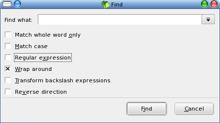
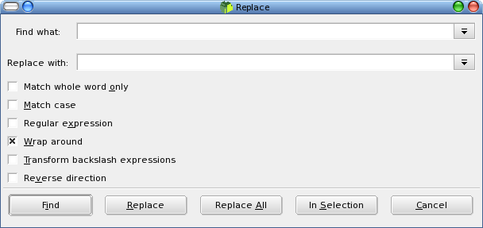

Find and replace
sdlBasic editor has options to allow searching for words, regular
expressions, matching case, in the reverse direction, wrapping around
the end of the document. C style backslash escapes which are listed in
the command line arguments section, may be used to search and replace
control characters.

Replacements can be made individually, over the
current selection or over the whole file. When regular expressions are
used tagged subexpressions can be used in the replacement text. Regular
expressions will not match across a line end.
